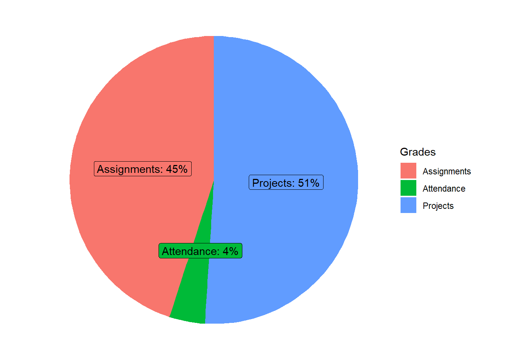
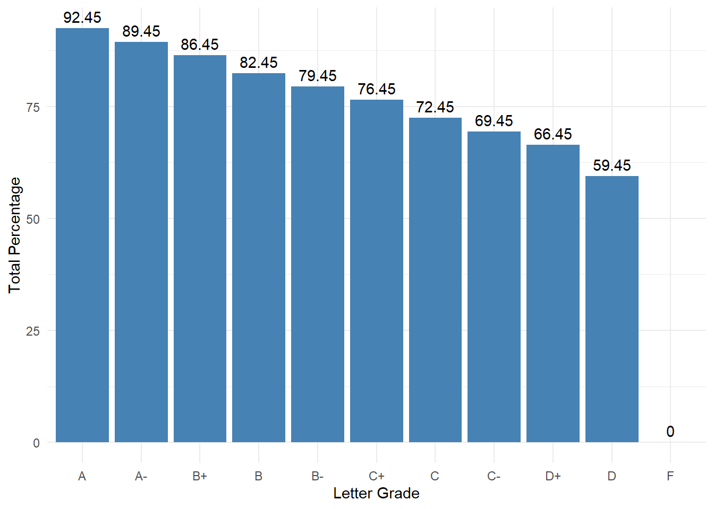

MATH 475. Applied Analytics Using SAS.
Office hours
Office hours is from 10:45 AM-12:45 PM on Tuesday and Thursday. I am also available over Zoom (ID: 4419675207) during these times if needed. If these time slots do not work, please feel free to schedule another time with me.
Textbook
- No text books required.
Course Objectives
After successfully completing this course, each student can explain and implement common analytical and statistical techniques on different types of data including time series data, text data and tabular data. Although the main computational platform for the class is SAS, we may also use R and Python (No prerequisites are required).
Grades
Assignments: The main purpose of the assignments is to help us understand the ideas and concepts behind the statistical/mathematical techniques. The form of submissions for assignments could be photos/scans of written answers or video recording of presentation or other formats.
Projects: Tentatively, we will have three projects focusing on the three types of data: time series data, text data and tabular data. Each project is worth 17% of the total grades.
Attendance: Attendance will be checked regularly in class. Missing fewer than four class meetings will guarantee you the full credits for attendance. The grade for attendance (4%) is enough to move up a letter grade. You are responsible for obtaining course material missed during an absence.
Grades Scale
The numerical grades are converted to letter grades as follows.
| A | 92.45 - 100% | C | 72.45 - 76.44% |
| A- | 89.45 - 92.44% | C- | 69.45 - 72.44% |
| B+ | 86.45 - 89.44% | D+ | 66.45 - 69.44% |
| B | 82.45 - 86.44% | D | 59.45 - 66.44% |
| B- | 79.45 - 82.44% | F | Below 59.44% |
| C+ | 76.45 - 79.44% |

Tentative Topics
- Analytics with Time Series Data
- Analytics with Text Data
- Analytics with Tabular Data
Academic Misconduct
Cheating will result in an F as your final grade and may result in your expulsion from the University. All cheating will be reported to the Chair of the Mathematics Department and Academic Advising.
Regarding Diversity
In this course, and all your courses at Bryant, and throughout the Bryant learning community, we value and respect diversity. This includes differences in race, ethnicity, nationality, gender, gender identity, sexuality, socioeconomic status, ability, and religion.